Skills
Languages/Frameworks
- C#
- C++
- C
- JavaScript
- Java
- Python
- HTML
- CSS
- R
- SQL
- Qt
- Unity
- Django
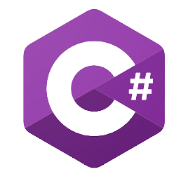
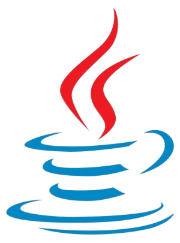
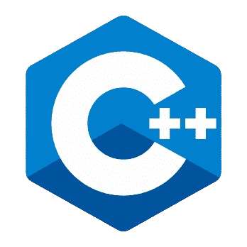


Software Dev Concepts & Tools
- OOP
- Relational Databases
- Multi-Threading
- Data Structures
- Versioning
- Basic C# Networking
- Self Documenting Code
- MVC
- Separation of Concerns
- SOLID software principles
Tools
- Visual Studio
- GitHub
- Rider
- VS Code
- IntelliJ IDEA
- Pycharm
- SSMS
- Docker Desktop
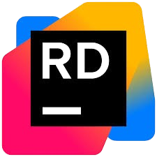
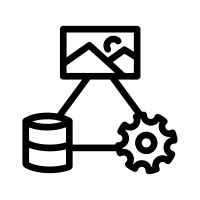
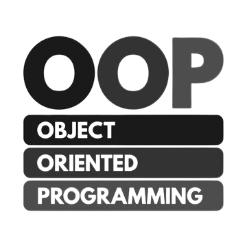
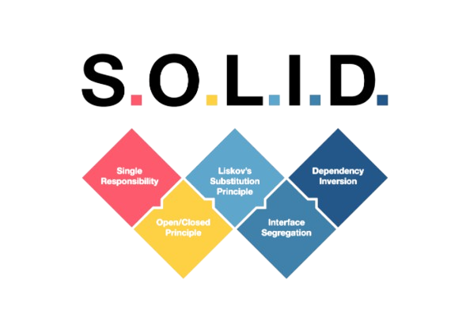
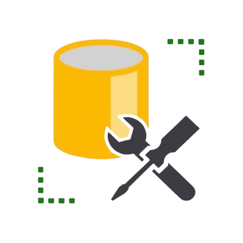
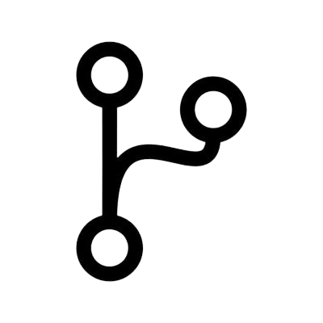
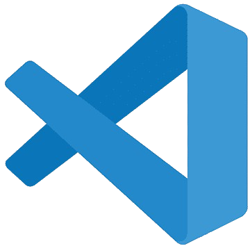
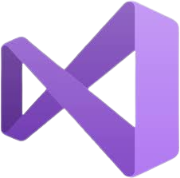
Courses
Below are CS courses I have taken at the University of Utah. Each has a non-exhaustive list of concepts and skills taught in that class.
Computer Systems
12/15/2025
- Binary Representations
- little endian v.s. big endian
- IEEE floating point representation
- x86-64
- AT&T syntax (src, dst)
- Registers, Immediates, Calling conventions
- Condition Codes: CF, ZF, SF, OF
- Instructions types: compares, jumps, arithmetic, loads, stores
- Jump tables, procedures
- gdb disassemble and stepping through asm programs
- C
- Functions
- Arrays
- Pointers
- Structures (Layout + Alignment)
- Unions
- Compiling bash gcc
- Optimizations: compiling, loop unrolling, reassociation, blocking
- Memory Hierarchy
- Spatial Locality: Data next to recently used data is more likely to be used soon
- Temporal Locality: Data used recently more likely to be used again.
- L1 cache 4-5 cycles
- L2 cache 12 cycles
- L3 cache 36 cycles
- Memory ~100 cycles
- Bus = communication between memory units.
- Caches
- Cache Entry: Address= [tag(t bits), set(s bits), block offset(b bits)]
- Cache size = E*S*B
- #offset bits = log_2(Block Size)
- #index bits = log_2(# of sets)
- #tag bits = address size - # offset bits - # index bits
- Number of blocks = Cache capacity / Block size
- Cold miss: cache is empty
- Conflict miss: cache is large enough, but multiple data objects all map to the same level k block.
- Capacity miss: set of active cache blocks is larger than the cache.
- Cache Coherence
- Write hit
- write-through: write immediately to memory
- write-back: defer write to memory until replaced
- Write miss
- write-allocate: load into cache, update cache
- No-write-allocate: write straight to memory
- Optimizations
- Compiler optimizations does not select efficient algorithms.
- Big-O savings are often more important than constant factors.
- Compilers operate under fundamental constraint: must not cause change in program order.
- Many optimization strategies to better utilize caches and cpu register level parallelism
- Loop unrolling
- Reassociation
- Blocking
- Exceptions: Allow program to react to changes in the system state.
- Exceptions: change in control flow to OS kernel in response to a system event
- Asynchronous Exceptions: events external to the processor
- Synchronous Exceptions: events that occur from executing instruction
- Page Fault: item is not mapped to physical memory yet.
- Processes: instance of a running program
- Logical Control Flow abstraction: each program seems to have exclusive use of cpu.
- Private address space abstraction: each program seems to have exclusive use of main memory.
- fork(), wait(), execve(), waitpid()
- Process groups
- File descriptors
- Unix philosophy: Everything is a file.
- handle to a file's input is an int
- int open(const char* path, int flags);
- UNIX I/O
- ssize_t read(int fd, void* buf, size_t n);
- ssize_t write(int fd, const void* buf, size_t n);
- Pipe: creates an "unnamed" file as a connection between processes.
- File descriptors are shared between processes.
- C I/O File calls are 10x faster because it doesn't have to go through the kernel every time.
- Signals
- General mechanism to push information to a process.
- Send signals to specified process: int kill(pid, int signum);
- Set signal handlers(function of what to do when signal arrives) for process
- Blocking signals
- Waiting for signals
- Virtual Memory
- Isolates processes that execute concurrently.
- Simplifies memory management.
- Virtual Addresses can be >> physical memory. ( Utilize disk + memory )
- Page table: Data structure in physical memory mapping virtual addresses to physical addresses.
- Each process has its own page table.
- Action of page hit. 1. MMU looks up page table 2. Looks up virtual addr. 3. translate to physical addr. 4. return result.
- Translation Lookaside Buffer(TLB): cache for VM addrs -> PM addresses.
- Dynamic Memory allocation
- mmap(), unmap(), sbrk()
- Standard C allocation: malloc(), free(), calloc(), realloc()
- Allocation metrics: performance, utilization
- Implemented a first-fit, splitting, coalescing, explicit-free list dynamic memory allocator with headers and footers in c.
- Garbage collection
- Reference Counting
- Network Programming
- TCP: Connection and stream oriented
- UDP: Connection-less and packet oriented
- IP/TCP
- Domain name system (DNS)
- Sockets, binds, listen, accept packets in c.
- Concurrent Programming
- Threads in C (pThread interface)
- Threads share all local data and code except for stack.
- Threads are less expensive then processes
- Threads run within the context of a process.
- All threads running on a process share the entire virtual address space except for stack.
- Synchronization: locks on critical regions
- Race conditions
- Deadlocks
- Mutex v.s. semaphore
- Linking/Compiling
- Strong vs weak symbols
- Static library v.s. shared library
- Linking at runtime
- Relocation: Replace symbols and labels with addresses and values.
Registers
Fastest • Smallest • CPU
Fastest • Smallest • CPU
L1 Cache
Very fast • Very small
Very fast • Very small
L2 Cache
Fast • Small
Fast • Small
L3 Cache
Shared • Larger • Slower
Shared • Larger • Slower
Main Memory (RAM)
Moderate speed • GBs
Moderate speed • GBs
Secondary Storage (SSD/HDD)
Slow • Persistent • TBs
Slow • Persistent • TBs
Computer Security
12/15/2025
- Computer Security Mindset
- Thinking like an attacker: understand ways security can be circumvented
- Threat Modeling: Identify assets, threats, and vulnerabilities
- Thinking like an defender: How can we minimize our vulnerabilities?
- Availability: users can access info/resources when needed
- Cryptography
- Goals of Cryptography
- Confidentiality: prevent unauthorized access to data
- Integrity: ensure data is not altered
- Authentication: verify message origin
- Randomness
- True randomness is secure but impractical
- Pseudo-Random Generator (PRG): expands small random seed into long random-looking output
- Pseudo-Random Function (PRF): fixed-length output built using PRGs
- Cipher Metrics
- Confusion: ciphertext statistically independent of plaintext
- Diffusion: plaintext changes affect many ciphertext bits
- Ciphers
- Substitution Ciphers
- Caesar Cipher: shifts each letter by a fixed amount
- Vigenère Cipher: shifts characters using a repeating key
- Vulnerable to frequency analysis
- Transposition Ciphers
- Rearrange plaintext symbols without changing them
- Examples: columnar, zig-zag, rail fence
- Low confusion, vulnerable to anagram attacks
- One-Time Pad (OTP)
- Key length equals plaintext length
- Encryption/Decryption: ciphertext = plaintext XOR key
- Perfect secrecy if key is truly random and never reused
- Highly impractical due to key management
- Stream Ciphers
- Generate keystream using PRG and a random seed
- Encrypt one bit/byte at a time
- More practical than OTP but seed must not be reused
- Block Ciphers
- Encrypt fixed-size blocks using a reusable key
- Most common encryption approach today
- Uses inverse function for decryption
- Block Cipher Modes
- Electronic Codebook (ECB)
- Each block encrypted independently
- Can be parallelized
- Low diffusion, reveals patterns
- Cipher Block Chaining (CBC)
- Each block XORed with previous ciphertext block
- Improved diffusion
- Cannot be fully parallelized
- Advanced Encryption Standard (AES)
- Most widely used modern block cipher
- Hash Functions
- Accept arbitrary-length input, produce fixed-size output
- Used for data integrity
- MD5 and SHA-1 are insecure due to collisions
- Merkle–Damgård construction chains compression functions
- Vulnerable to length extension attacks
- Message Authentication Codes (MAC)
- Provide integrity and authentication using a secret key
- HMAC resists length extension attacks
- HMAC-SHA256 is commonly used
- Secure Channels
- Encrypt data for confidentiality
- Apply MAC for integrity and authentication
- Hash Attacks
- Collision Attack: find two messages with same hash
- Second Pre-image Attack: find a different message with same hash as a given one
- Pre-image Attack: find a message that produces a given hash
- Asymmetric Cryptography
- Everyone has one public and one private key
- Symmetric Crypto Problem: shared secrets and not scalable.
- Diffie–Hellman Key Exchange
- Asymmetric protocol used to establish a shared symmetric key
- Allows secure key exchange over an insecure channel
- Often used before switching to faster symmetric encryption
- Asymmetric Secure Channel
- Uses asymmetric cryptography to establish trust
- Once established, switches to symmetric encryption for efficiency
- RSA Cryptography
- Public key encryption scheme
- Supports both encryption and digital signatures
- Integrity & Authenticity
- Message is signed using the sender’s private key
- Signature is verified using the sender’s public key
- Ensures the message was not altered and confirms the sender
- Confidentiality
- Message is encrypted using the recipient’s public key
- Message is decrypted using the recipient’s private key
- Only the intended recipient can read the message
- Key Usage Summary
- Public key → encrypt or verify
- Private key → decrypt or sign
- Bleichenbacher’s Attack
- Attack on RSA implementations
- Exploits small values or improper padding
- Can recover plaintext by taking mathematical roots
- Application Security
- Buffer Overflow
- Program uses more memory than was allocated
- Often occurs on the stack
- Can overwrite important data or control flow
- Integer Overflow
- A very large integer wraps around to a small value
- Can lead to incorrect memory allocation or logic errors
- Code Injection
- Attacker injects code (e.g., shellcode) into a payload
- Injected code is then executed by the program
- Code Reuse
- Redirects control flow to unintended existing code
- Avoids injecting new code
- Shellcode
- Malicious payload executed after exploitation
- Common goal is spawning a shell (e.g., execve("/bin/sh"))
- Often escalates privileges (e.g., setuid(0))
- Return-Oriented Programming (ROP)
- Attacker chains together existing code snippets
- Uses multiple return instructions
- Works well on x86 due to CISC instruction set
- Pointer Dereferencing
- Using pointers to access or modify memory
- Example: overwriting variables via manipulated pointers
- Can allow arbitrary memory access
- Address Space Layout Randomization (ASLR)
- Defense that randomizes memory locations on each execution
- Makes buffer overflow attacks harder
- Often defeated using NOP sleds
- Data Execution Prevention (DEP)
- Defense makes stack and heap non-executable
- Prevents direct execution of injected code
- Encourages code-reuse attacks instead
- Unsafe Functions
- Functions like gets() and strcpy() allow buffer overflows
- Should be avoided or replaced with safer alternatives
- Stack Canaries
- Special values placed on the stack
- Detect if stack memory has been overwritten
- Web Security
- Security when interacting with web sites.
- SQL injection attacks
- Inject valid sql syntax into server that will run
- Bypass logins, extract user data, modify data.
- Delete data, escalate privileges, take over server
- Prevention: Don't confuse code with data
- Cross-Site Request Forgery (CSRF)
- Browsers automatically resend cookies (user session)
- By crafting URL's an attacker can get indirect access without logging in.
- GET attacker spies on data retrieved using state.
- Violates Same Origin Policy (SOP): ensure user action originates from our website
- Prevention: Server verifies that CSRF token within POST request matches form
- Cross-Site Scripting Attack (XSS)
- User submits malicious code to the server, server sends code back to user.
- Persistent: Server saves malicious code in database, any user get served JS.
- Reflected: attacker crafts URl with malicious code. User uses link and code is served back from the server and executed.
- Browser Security
- Use HTTPS! DOM mirroring, JS rendering off, Sandboxing
- Network Security
- Packet Sniffing: act of capturing and inspecting network packets
- Email Spoofing: attacker forges address to appear as a different sender
- Man-in-the-middle attacks
- Attacker secretly intercepts, relays, alters communication between parties
- Easy if using an unencrypted protocol.
- Denial of Service (DoS)
- Make server/service unusable
- fork() bomb
- Many other ways to consume resources
- Distributed Denial of Service (DDOS)
- Bot master has botnet
- SYN flooding attacks
- Ping of death (larger than acceptable packet)
- ICMP smurf attack, ARP flooding, Attacks on physical layer
- Malware
- Malware: malicious software designed to steal data, cause damage, or take control of a system
- Spyware: secretly monitors user activity and collects information without consent
- Ransomware: encrypts a user’s system or files and demands payment to restore access
- Virus: self-replicating software that infects other programs and requires user action to spread
- Worm: self-replicating malware that spreads automatically over networks
- Rootkit: gives attackers persistent, hidden control over a compromised system
- Botnet: network of infected computers controlled remotely by a botmaster
Scientific Computing
12/15/2025
- Computational Science Pipeline
- Modeling, simulation, evaluation
- Scientific visualization
- Mesh Generation
- Domain discretization
- Structured vs. unstructured meshes
- Error Analysis
- Absolute and relative error
- Conditioning and floating-point errors
- Interpolation
- Polynomial interpolation
- Spline interpolation
- Root Finding
- Numerical solutions to non-closed form equations
- Convergence and stability
- Numerical Integration
- Newton–Cotes and Gaussian quadrature
- Runge–Kutta methods
- Random Numbers & Monte Carlo
- Pseudorandom number generation
- Monte Carlo determineing volumes
- 2D & 3D Visualization
- Color maps and contour plots
- Marching squares and marching cubes
- Ray Tracing
- Ray Casting
- Eigen-faces Final project
- Took databases of faces and created matrix representation.
- Took PCA of the matrix containing all most important facial features.
- Experimented with how many eigenvalues were needed to recreate a face that was not in the original database.
Foundations of Data Analysis
12/15/2025
- Probability Review
- Independence, correlation, conditionals
- Distributions: normal, binomial
- Expectation and variances
- Joint distributions
- Bayes Rule
- Central Limit Theorem
- Maximum likelihood expected
- Concentrations Measures
- Markov inequality
- Chebyshev inequality
- Chernoff-Hoeffding inequality
- Linear Algebra review
- Vector and Matrix Norms
- Linear Independence
- Orthogonality
- Matrix inverses
- Eigenvectors and Eigenvalues
- Linear Regression
- Simple Linear regression
- Multiple variable explanatory vars
- Polynomial Regression
- Closed form solution a = (X.T @ X )^-1 @ X.T @ y
- Evaluating a model
- Overfitting
- Underfitting
- Leave one out cross validation
- k fold cross validation
- Gradient Descent (GD)
- Algorithm to find global minima/maxima of a function
- Idea: always step in the direction opposite of the gradient
- Guaranteed to find global minimum for convex functions
- Stochastic GD: choose random point and take gradient
- Batch GD: choose a certain number of points and go in the opposite of their average gradient direction.
- Dimensionality Reduction
- Real world data has many features, we'd like a lower dim representation.
- Singular value decomposition(SVD) - Breaks matrix into 3 separate matrices with rows in some ranking importance.
- Eigenvalues and vectors and how they relate to SVD
- How we can expand SVD to Principle Component Analysis for Dimensionality Reduction.
- Classification
- Linear classification
- Optimizations with GD
- Perceptron algorithm: If linearly separable data guaranteed to find solution
- Clustering
- Group together similar data points
- Supervised learning: given set of points we want to predict label (Linear Regression, Classification)
- Unsupervised learning: Have data but no labels, don't know explicitly what looking for (Dimensionality reduction, Clustering)
- Voronoi diagrams: efficient data structure to find closet point to site.
- Lloyd's algorithm assigns points to k clusters. (Utilizes Voronoi diagrams.)
- Soft Clustering: each point is given a probability of it belonging to a certain cluster.
- Expectation Maximization algorithm for soft clustering.
- Kernels
Software Practice 2
5/1/2025
- C++
- Learned basics of C++; Insertion operator, Extraction operator, standard library, Scope resolution operator, arrays, etc.
- OOP in C++; Constructors, Destructors, Header files, overloading operators, copy constructor etc.
- No garbage collector; We learned about pointers and references, allocating and deallocating memory to avoid memory leaks.
- Pass by value is the default in C++.
- Documentation with Doxygen
- Enums in C++
- Environment
- Used Docker Desktop and Linux Ubuntu instance.
- Basic terminal commands. pwd, cd, kill, ls, etc.
- Compiling
- Makefiles and how to compile code from them.
- Create variables in Makefiles.
- Name: dependencies ->(Command to make it)
- Debugging with Makefile and -g flag.
- Code Style
- Maximize readability and maintainability.
- Abstraction, minimize complexity.
- OOP principles
- C++ allows multi-inheritance; But don't inherit from multiple classes to avoid dread diamond problem.
- Use scope resolution operator to specify methods.
- Interface is a class with only purely virtual methods. virtual void MyMethod()=0;
- Use the virtual keyword to determine method at runtime not compile time. Allowing for the most derived method to be called, crucial for polymorphism.
- Object slicing: slices off fields or methods of a derived class when passed as a base class.
- Data Structures
- Maps, Arrays, Linked lists, Binary Trees in C++
- MVC
- MVC separates logic, UI, and user input.
- Use signals and slots in Qt to interact between the view and the model.
- Testing
- TDD; Cost to fix bug in requirements stage is 30x less expensive than in production phase.
- Googletest
- ASSERT_EQ(x.size(), y.size());
- Error Handling
- Exceptions in C++
- Try, catch
- Software Engineering
- Roles in Software: customer, manager, developer, tester, user.
- Design: Unified Modeling Language (UML)
- Software development methodologies: Waterfall, Agile, Kanban
- Agile values: Individuals over processes and tools, working software over comprehensive documentation, customer collaboration over contract negotiation, and responding to change over following a plan.
- Waterfall: Makes one pass from idea to final product. Requirements -> Design -> Implementation -> Integration and Testing -> Maintenance. Use Waterfall when requirements are clear and fixed and developer turnover is high.
- Agile: Mindset and values of how to develop software. Individuals over processes, working software over comprehensive documentation. (Agile Manifesto)
- Scrum and Kanban are flavors of Agile mindset. Scrum uses sprints to organize development cycles and utilizes daily standup.
- Kanban limit the number of work in progress on tickets.
- Qt
- Qt is a C++ UI framework which can create widget and desktop applications.
- Use signals and slots to interact with UI.
- Function and method pointers.
- Qt provides many classes in the standard library to make UI development easier.
- Team Skills
- In the second half of the course we combined into teams of 5 to practice different software development methodologies.
- Created a sprite editor using Waterfall approach in Qt.
- Created RegexTrainer using Scrum/Kanban approach in Qt.
- Versioning
- Used git bash
- Learned a lot about versioning with branches and working on files within large teams.
Web Dev 1
5/1/2025
- HTML
- Semantic meaning and usage of html tags.
- tables, inputs, etc.
- Accessibility when writing HTML (alt attribute on img tag)
- CSS
- Styling web pages
- Emphasis on flexbox for dynamic resizing
- flex-direction, justify-content, align-items
- Media Queries
- Python
- Interpreted dynamically typed language.
- Indented based
- Basics of lists, maps
- Django
- Python web framework for creating dynamic web pages with databases.
- models, views, templates and urls in Django.
- Running migrations when models change.
- Django IntegerFields, ForeignKey, ImageField, etc.
- Admin interface
- Injecting information into templates
- Loops, conditionals, accessing information inside a template.
- Queries and filters inside django view.
- GET vs POST HTTP requests
- CSRF tokens necessary in forms
- Security
- Authentication and Authorization in webpages.
- @login_required tag on views.
- Javascript
- Interpreted dynamically typed language primarily used on the client side
- Browsers have built in JS engines
- The DOM(Document Object Model) - model of all tags in the html page of this document.
- document.getElementByID(" "); - Gets first element with empty string as id.
- Can create and manipulate elements through the DOM in javascript code making websites more interactive.
- Types in JS
- Loops, conditionals, functions, asynchronous programming in JS.
- Events, event handlers, promises
- MVC
- Django - Model=Model.py View=Templates Controller=urls.py/view.py
- Testing
- Manual testing
- Django Tests - backend testing
- Selenium Tests - end-to-end testing. Acts like user interacting with web-page.
- Error Handling
- Exceptions in JS and python
- Try, catch
- Cloud computing
- URL(uniform resource locator): protocol, hostname/domain, port, path
- IP addresses
- Domain names (namecheap.com)
- AWS - (EC2)Elastic Compute Cloud
- AWS instances and Elastic IP addresses
- NGINX servers - high performance web servers (acts as an intermediary with application servers)
Software Practice 1
8/28/2024
- Networking
- Networking in C# uses sockets as the underlying structure.
- TCP ensures reliable and ordered data delivery.
- GUI updates require "Invoke" for cross-thread operations.
- Debugging
- Use IDE tools like breakpoints, watch variables, and the call stack.
- Debug by isolating issues and reproducing errors.
- Databases
- SQL stands for Structured Query Language.
- Join tables to find related data, e.g., professors teaching a student.
- ACID ensures reliable transactions (e.g., Atomicity).
- Schema design prevents data duplication and nulls.
- Good Software Practices
- Write self-documenting, DRY code.
- Follow SOLID principles for maintainability.
- Use Git for version control: add, commit, push, merge.
- Test early and often; most errors occur during modifications.
- Optimization
- Don’t optimize prematurely; focus on readability.
- MVC
- MVC separates logic, UI, and user input.
- Applied in projects like Snake and Spreadsheet.
- TDD
- Write tests before coding (TDD).
- Code coverage should aim for 80-90%.
- C#
- Lambda expressions (e.g., "(x) => x + 5") simplify logic.
- Blazor builds interactive UIs with C#.
- Miscellaneous
- Ethics: The end user is the main stakeholder.
- Pair programming enhances quality and collaboration.
- Use JSON for data exchange and "ref" for parameter modification.
- HTTP and HTML
- HTTP requests include methods, headers, and body.
- HTML basics: <div>, <p>, and "class" attributes.
- CSS styles HTML via external or inline stylesheets.
- Versioning
- Version control tracks changes and prevents conflicts.
Computer Organization
5/1/2025
- Computer performance increase slowing
- Death of Moore's law
- Physics wall - hard to make transistors any smaller.
- Power wall - limited with cooling solutions
- "Idea wall" - much harder to think of more complex ideas (and more expensive)
- Clock & transistors
- clock - voltage signal that goes up and down.
- Power consumption - dynamic power vs leakage power.
- Performance
- Better processors, circuits/pipelines, organization/architecture.
- More multi-threaded applications
- HW/SW interface. Transition from high-level language to binary bits.
- Computer components
- Input/output devices, secondary storage(HDD/SSD), primary storage(RAM), CPU/processor
- Cache/Memory Hierarchies
- Performance Metrics
- Response time (latency)
- Execution time
- speedup
- Clocks and cycles
- MIPS(microprocessor without interlocked pipeline stages) assembly language
- Keep hardware simple, keep instructions simple.
- Registers
- Load word, save word, Stack and heap memory
- Created a simple branch predictor in MIPS.
- Created recursive fibonacci sequence in MIPS which output the nth number of the sequence.
- Procedures and System calls
- Number crunching
- Binary operations
- Floating point operations / IEEE 754 representation
- Floating point IEEE 754 -> Decimal -> Hex
- Logic Gates
- Boolean algebra, logic laws
- Truth tables
- Logic gates
- ALU, and more complex circuits
- Branches and latches
- Finite State Machines
- Problems and Diagraming
- High level CPU design
- Pipelining
- Multi-stage circuit
- Increase throughput
- Hazards - Control and Data Hazards
- Security
- Cache vulnerabilities
- Meltdown and Spectre attacks
- Virtual memory
- Every application acts if they have the whole memory.
- Virtual memory is translated to actual memory, and saved on disk if no more RAM.
- GPUs and Disks attributes and roles
Data Structures and Algorithms
1/6/2024
- Data Structures
- Arrays: A contiguous block of memory, offering fast indexing but fixed size.
- Linked Lists: A linear structure where elements are connected by pointers.
- Stack: A LIFO (Last In, First Out) data structure
- Queue: A FIFO (First In, First Out) structure
- Graphs: Represent networks of nodes and edges.
- Binary Heap: A complete binary tree structure used to implement priority queues efficiently.
- Binary Tree: A tree where each node has at most two children, used in searching and hierarchical data storage.
- HashTables/HashMaps: Provide fast lookups by hashing keys to indices in an array.
- Huffman Trees: Used for data compression by assigning variable-length codes to input characters based on frequencies.
- Algorithms
- Sequential Search: A simple search method that checks each element in order.
- Binary Search: An efficient search algorithm for sorted data, with O(log n) complexity.
- Bubble Sort: A basic sorting algorithm that repeatedly swaps adjacent elements until sorted.
- Insertion Sort: Builds the sorted array one element at a time by inserting elements into their correct positions.
- Selection Sort: Sorts by repeatedly finding the smallest element and moving it to the front.
- Quick Sort: A divide-and-conquer algorithm that uses a pivot to partition the array and recursively sort partitions.
- Merge Sort: A stable, divide-and-conquer algorithm that merges sorted subarrays into a single sorted array.
- Depth First Search (DFS): Traverses graph/tree structures deeply along branches before backtracking.
- Breadth First Search (BFS): Explores graph/tree structures level by level, ideal for finding the shortest path.
- Dijkstra's Algorithm: Finds the shortest path in a graph with non-negative edge weights.
- Tree Traversal Algorithms: Methods like in-order, pre-order, and post-order for visiting tree nodes systematically.
Searches
Sorts
Graph Algorithms
Discrete Structures
1/6/2024
- Propositional Calculus
- Truth Tables: Evaluate logical expressions systematically.
- Logical Equivalence: Identify when two statements are logically the same.
- Tautology/Contradiction: Statements always true or false.
- Boolean Algebra: Operations like AND, OR, NOT.
- Conditionals: Statements involving "if-then" logic.
- Negation: Reversing a statement's truth value.
- Digital Circuits
- Logic Gates: Basic components like AND, OR, NOT.
- Circuit Simplification: Make circuits equivalent but simpler.
- Predicate Calculus
- Variables and Domains: Define and interpret variables.
- Quantifiers: Use universal and existential quantifiers.
- Counter-Examples: Validate or refute propositions.
- English to Quantified Logic: Translate complex statements.
- Logical Arguments
- Argument Form: Structure of logical reasoning.
- Premises/Conclusion: Components of an argument.
- Rules of Inference: Logical steps in reasoning.
- Proofs
- Direct Proof: Prove by straightforward reasoning.
- Proof by Contradiction: Establish by refuting the opposite.
- Set Theory
- Membership, Equality, Subset: Basic set concepts.
- Cardinality: Size of a set.
- Set Operations: Union, Intersection, Difference.
- Venn Diagrams: Visualize set relationships.
- Functions
- Domain/Codomain: Input and output sets.
- Injective, Surjective, Bijective: Function properties.
- Composition: Combining functions.
- Sequences
- Arithmetic/Geometric Sequences: Types of sequences.
- Recurrence Relations: Relating terms to predecessors.
- Summation/Product Sequences: Aggregating terms.
- Mathematical Induction
- Base Case: Verify initial statement.
- Inductive Step: Prove general case.
- Counting/Combinatorics
- Product/Sum Rules: Counting principles.
- Pigeonhole Principle: Prove unavoidable results.
- Permutations/Combinations: Arrange and select items.
- Relations
- Reflexivity, Symmetry, Transitivity: Relation properties.
- Equivalence Classes: Group related elements.
Accelerated Introduction to OOP
8/28/2023
- Variables
- Understanding data storage and types in programming.
- Assigning values to variables.
- Classes
- Defining blueprints for creating objects.
- Class structure: fields, methods, and constructors.
- Objects
- Instances of classes with specific data and behavior.
- Interacting with object methods and properties.
- Encapsulation
- Hiding implementation details and exposing necessary parts of the object.
- Using access modifiers like public, private, and protected.
- Inheritance
- Creating new classes based on existing ones.
- Reusing and extending functionality of parent classes.
- Polymorphism
- Using a single interface to represent different types of objects.
- Method overriding and overloading.
- Abstraction
- Hiding complex logic and showing only essential features.
- Using abstract classes and interfaces.
Currently Taking:
12/18/2025